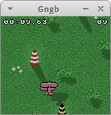
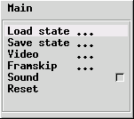

gngb
Dieser Artikel wurde für die folgenden Ubuntu-Versionen getestet:
Ubuntu 16.04 Xenial Xerus
Ubuntu 14.04 Trusty Tahr
Zum Verständnis dieses Artikels sind folgende Seiten hilfreich:
Gngb ist ein Nintendo® GameBoy™-Emulator, welcher in der Programmiersprache C geschrieben wurde. Das Programm nutzt SDL und OpenGL. Die meisten Nintendo® GameBoy™ Classic und Nintendo® GameBoy™ Color Spielmodul - im weiteren ROM genannt - werden unterstützt. Die Spielsteuerung erfolgt über die Tastatur und/oder einem Joystick. Die Speicherung des aktuellen Spielstandes ist zu jedem Zeitpunkt möglich.
|  |
GB-Flyer  |
Installation¶
Folgendes Paket muss installiert [1] werden:
gngb (universe)
 mit apturl
mit apturl
Paketliste zum Kopieren:
sudo apt-get install gngb
sudo aptitude install gngb
Bedienung¶
Um nun ein Spiel in gngb zu spielen benötigt man ein ROM. Das ROM öffnet man über das Terminal [2]:
gngb -f -s -C -a ROMNAME.gb # Spiel ROMNAME wird im Vollbildmodus gestartet gngb -s -C -a /media/Disk/ROMNAME.gbc # Spiel ROMNAME wird in Orner /media/Disk gestartet
Weitere Startoptionen können verwendet werden:
| Optionen | |
| Parameter | Beschreibung |
-h | Hilfe |
-a | Autoframeskip |
-f | Vollbild |
-G | GameBoy Classic |
-C | GameBoy Color |
-j | Joystick nutzen |
Eine detaillierte Auflistung findet man in den Manpages. Um die Parameter nicht immer von Hand einzugeben kann man diese auch in der Konfigurationsdatei hinterlegen. Nach dem Start des Emulators wird der Ordner ~/.gngb im Heimatverzeichnis angelegt. Hier werden die Spielstände abgelegt.
Hinweis:
Die ROMs müssen in den Formaten .gb (Nintendo® GameBoy™ Classic) und .gbc (Nintendo® GameBoy™ Color) vorliegen.
Tastatur¶
Das jeweilige Spiel kann mit den folgenden Tasten gesteuert werden:
| Tastenkürzel | |
| Taste | Tastenentsprechung auf dem GameBoy |
| ⏎ | Start |
| ⇧ | Select |
| X | A |
| W | B |
| ← ↑ → ↓ | Steuerung der Spielfigur |

Menü¶
Über Tab ⇆ erreicht man im laufenden Programm das Menü. Mit den Tasten ↑ ↓ navigiert man durch dieses. Esc führt immer zum vorherigen Menüpunkt zurück. Mit ⏎ bestätigt man die Auswahl.
Dem Benutzer stehen verschiedene Punkte zur Auswahl:
| Menü | |
| Text | Beschreibung |
| "Load state..." | Spielstand laden |
| "Save state..." | Spiel abspeichern |
| "Video..." | Vollbildmodus (de)aktivieren / Filter ändern |
| "Frameskip..." | Bildeinstellungen verändern |
| "Sound" | Sound (de)aktivieren |
| "Reset" | Spiel zurücksetzen. |
Konfiguration¶
Um die Einstellungen des Emulators zu verändern öffnet man im Ordner ~/.gngb die Datei gngbrc mit einem Editor [3] und bearbeitet diese. Sollte diese nicht existieren eine Datei dieses Titels erstellen und den Inhalt der Vorlage hineinkopieren.
Tastatur¶
Für Änderungen an der Steuerung per Tastatur vorzunehmen den folgenden Abschnitt suchen:
# Key configuration # order : AXE_UP,AXE_DOWN,AXE_LEFT,AXE_RIGHT,A,B,START,SELECT # please see SDL_keysym.h for key definition # or push F12 during game and the keysym code of # the key you press will be printed # (you can do the same for the joystick) map_key 273,274,276,275,120,119,13,303
Die Basissteuerung kann man verändern, indem man den Emulator startet und
F12 drückt. Nun erscheint die Meldung: Show Keysym Code: on - beim drücken der einer Taste wird nun der entsprechende Tastencode ausgegeben. Für
erscheint z.B. die 13. Man kann die Codes aber auch dieser Liste  entnehmen. Nun die Codes den eigenen Wünschen entsprechend abändern z.B.:
entnehmen. Nun die Codes den eigenen Wünschen entsprechend abändern z.B.:
map_key 273,274,276,275,121,120,13,32
Das ergibt nach dem Neustart des Emulators folgende individuelle Steuerung:
| Tastenkürzel | |
| Taste | Tastenentsprechung auf dem GameBoy |
| ⏎ | Start |
| Select | |
| X | B |
| Y | A |
| ← ↑ → ↓ | Steuerung der Spielfigur |
Vollbild¶
Um den Emulator im Vollbild zu starten die ursprünglichen Zeilen von 0 (Deaktiviert) auf 1 (Aktiviert) ändern:
# Play in fullscreen? fullscreen 0
Sound¶
Um den Sound zu (de)aktivieren den Wert in der Zeile anpassen - 0 (Deaktiviert) / 1 (Aktiviert):
# Have sound? sound 1
- Erstellt mit Inyoka
-
 2004 – 2017 ubuntuusers.de • Einige Rechte vorbehalten
2004 – 2017 ubuntuusers.de • Einige Rechte vorbehalten
Lizenz • Kontakt • Datenschutz • Impressum • Serverstatus -
Serverhousing gespendet von